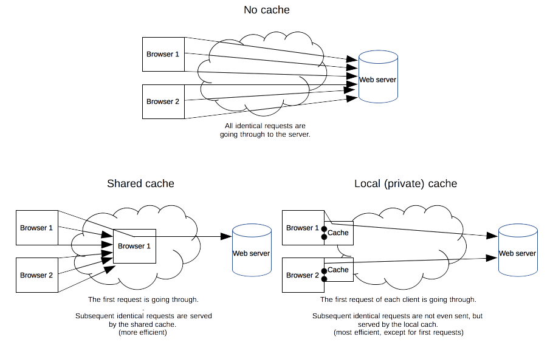

The performance of web sites and applications can be signifcantly improved by reusing previously fetched resources. Web caches reduce latency and network traffic and thus lessen the time needed to display a representation of a resource. By making use of HTTP caching, Web sites become more responsive.
Different kinds of caches
A cache is a tool that stores versions of a given document and serve it back when requested. When a cache have a requested resource, it intercepts the requests and achieve several goals: it eases the load of the server that doesn't need to serve all clients itself, and it improves performances by being closer to the client: it takes less time to transmit the ressource back. For a Web site, it is a major component in achieving high performance. On the other side, it has to be configured propertly as not all resources stay identical forever: it is important to cache a resource only until it changes, not longer.
There several kinds of caches that can be grouped in two main categories: private or shared caches. A shared cache is a cache that stores responses to be reused by more than one user and a private cache is only dedicated to a single user. This page will mostly talk about browser and proxy caches, but there are also gateway caches, CDN, reverse proxy caches and load balancers that are deployed on web servers for better reliability, performance and scaling of web sites and web applications.

Private browser caches
A private cache is dedicated to a single user. You might have seen "caching" in your browser's settings already. A browser cache holds all documents downloaded via HTTP by the user. This cache is used to make visited documents available for back/forward, saving, viewing-as-source, etc. without requiring an additional trip to the server. It likewise improves offline browsing of cached content.
Shared proxy caches
A shared cache is a cache that stores responses to be reused by more than one user. For example, an ISP or your company might have set up a proxy to serve thousands of users and popular resources are reused a number of times to reduce network traffic and latency.
Targets of caching operations
HTTP caching is an optional operation, but reusing a cached response is desirable often. However, common HTTP caches are typically limited to caching responses to {{HTTPMethod("GET")}} and may decline other methods. The primary cache key consists of the request method and target URI (oftentimes only the URI is used as only GET requests are caching targets). Common forms of caching entries are:
- Successful results of a retrieval request: a {{HTTPStatus(200)}} (OK) response to a {{HTTPMethod("GET")}} request containing a resource like HTML documents, images or files.
- Permanent redirects: a {{HTTPStatus(301)}} (Moved Permanently) response.
- Error responses: a {{HTTPStatus(404)}} (Not Found) result page.
- Incomplete results: a {{HTTPStatus(206)}} (Partial Content) response.
- Responses other than {{HTTPMethod("GET")}} if something suitable for use as a cache key is defined.
A cache entry might also consist of multiple stored responses differentiated by a secondary key, if the request is target of content negotiation. For more details see the information about the {{HTTPHeader("Vary")}} header below.
Controlling caching
The Cache-control header
The {{HTTPHeader("Cache-Control")}} HTTP/1.1 general-header field is used to specify directives for caching mechanisms in both, requests and responses. Use this header to define your caching policies with the variety of directives it provides.
No cache storage at all
The cache should not store anything about the client request or server response. A request is sent to the server and a full response is downloaded each and every time.
Cache-Control: no-store Cache-Control: no-cache, no-store, must-revalidate
No caching
A cache will send the request to the origin server for validation before releasing a cached copy.
Cache-Control: no-cache
Private and public caches
The "public" directive indicates that the response may be cached by any cache. This can be useful, if pages with HTTP authentication or response status codes that aren't normally cacheable, should now be cached. On the other hand, "private" indicates that the response is intended for a single user only and must not be stored by a shared cache. A private browser cache may store the response in this case.
Cache-Control: private Cache-Control: public
Expiration
The most important directive here is "max-age=<seconds>" which the maximum amount of time a resource will be considered fresh. Contrary to {{HTTPHeader("Expires")}}, this directive is relative to the time of the request. For the files in the application that will not change, you can usually add aggressive caching. This includes static files such as images, CSS files and JavaScript files, for example.
For more details, see also the Freshness section below.
Cache-Control: max-age=31536000
Validation
When using the "must-revalidate" directive, the cache must verify the status of the stale resources before using it and expired ones should not be used. For more details, see the Validation section below.
Cache-Control: must-revalidate
The Pragma header
{{HTTPHeader("Pragma")}} is a HTTP/1.0 header, is not specified for HTTP responses and is therefore not a reliable replacement for the general HTTP/1.1 Cache-Control header, although it does behave the same as Cache-Control: no-cache, if the Cache-Control header field is omitted in a request. Use Pragma only for backwards compatibility with HTTP/1.0 clients.
Freshness
The freshness lifetime is calculated based on several headers. If a "Cache-control: max-age=N" header is specified, then the freshness lifetime is equal to N. If this header is not present, which is very often the case, it is checked if an {{HTTPHeader("Expires")}} header is present. If an Expires header exists, then its value minus the value of the {{HTTPHeader("Date")}} header determines the freshness lifetime. Finally, if neither header is present, look for a {{HTTPHeader("Last-Modified")}} header. If this header is present, then the cache's freshness lifetime is equal to the value of the Date header minus the value of the Last-modified header divided by 10.
The expiration time is computed as follows:
expirationTime = responseTime + freshnessLifetime - currentAge
where responseTime is the time at which the response was received according to the browser.
Here is an example of what happens with a cache proxy:

Cache validation
Revalidation is triggered when the user presses the reload button. It is also triggered under normal browsing if the cached response includes the "Cache-control: must-revalidate" header. Another factor is the cache validation preferences in the Advanced->Cache preferences panel. There is an option to force a validation each time a document is loaded.
When a cached documents expiration time has been reached, it is either validated or refetched. Validation can only occur if the server provided either a strong validator or a weak validator.
ETags
The {{HTTPHeader("ETag")}} response header is an opaque-to-the-useragent value that can be used as a strong validator. If the ETag header is present in a response, then the client can issue an {{HTTPHeader("If-None-Match")}} request header to validate the cached document.
The {{HTTPHeader("Last-Modified")}} response header can be used as a weak validator. It is considered weak because it only has 1-second resolution. If the Last-Modified header is present in a response, then the client can issue an {{HTTPHeader("If-Modified-Since")}} request header to validate the cached document.
When a validation request is made, the server can either ignore the validation request and response with a normal {{HTTPStatus(200)}} OK, or it can return {{HTTPStatus(304)}} Not Modified to instruct the browser to use its cached copy. The latter response can also include headers that update the expiration time of the cached document.
Varying responses
The {{HTTPHeader("Vary")}} HTTP response header determines how to match future request headers to decide whether a cached response can be used rather than requesting a fresh one from the origin server.
When a cache receives a request that can be satisfied by a cached response that has a Vary header field, it must not use that cached response unless all header fields as nominated by the Vary header match in both the original (cached) request and the new request.

This can be useful for serving content dynamically, for example. When using the Vary: User-Agent header, caching servers should consider the user agent when deciding whether to serve the page from cache. If you are serving different content to mobile users, it can help you to avoid that a cache may mistakenly serve a desktop version of your site to your mobile users. In addition, it can help Google and other search engines to discover the mobile version of a page, and might also tell them that no Cloaking is intended.
Vary: User-Agent
Because the {{HTTPHeader("User-Agent")}} header value is different ("varies") for mobile and desktop clients, caches will not be used to serve mobile content mistakenly to desktop users or vice versa.